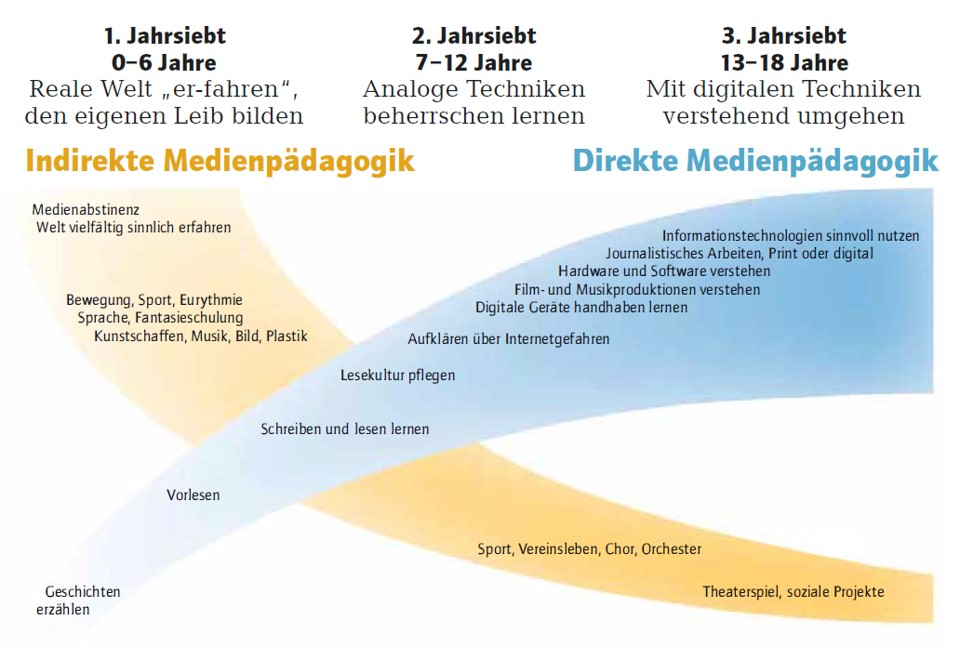

Indirekte und direkte Medienpädagogik
Die Technik ist für den Menschen heutzutage ein Hilfsmittel, welches ihm viele Tätigkeiten abnimmt, wodurch aber auch die Gefahr besteht, dass ihm die damit einhergehenden Fähigkeiten verloren gehen. Das vorstellende Denken wird dem Handeln gegenüber von den Medien überproportional beansprucht, womit sich der Mensch von der realen Welt immer etwas abschließt und seiner Leiblichkeit entfremdet (siehe auch Eigenschaften der Medien und psychologische Wirkungen). Für den Erwachsenen, der die Möglichkeiten des Ausgleichs kennt, haben die heutigen technischen Möglichkeiten deswegen vielfältige Vorteile. Kinder müssen sich die leibliche Grundlage jedoch erst erarbeiten und ihre sinnlichen, seelischen und geistigen Anlagen ausbilden. Dem direkten Umgang mit den Medien und dem Erlernen von Anwendungen, muss also die Schulung dieser Anlagen vorausgehen, damit die Kinder dem Leben, und damit ja auch den Medien, gewachsen sind. Es kann daher auch von indirekter Medienpädagogik gesprochen werden. Für eine gesunde Leibbildung müssen Kinder also zu genügend Tätigkeiten und Erfahrungen angeregt werden, damit sie ihren Willen vielfältig üben und schulen können. Auf der anderen Seite sollten aber auch Einflüsse, die diese körperliche und seelische Reifung behindern, vermieden und weitestgehend ausgeschlossen werden. Der Verzicht auf Medien in der Kindheit kommt dann dem zugute, was durch direkte Medienpädagogik, mit Curricula die sich am Entwicklungsstand der Kinder und Jugendlichen orientieren, erarbeitet werden kann.1
